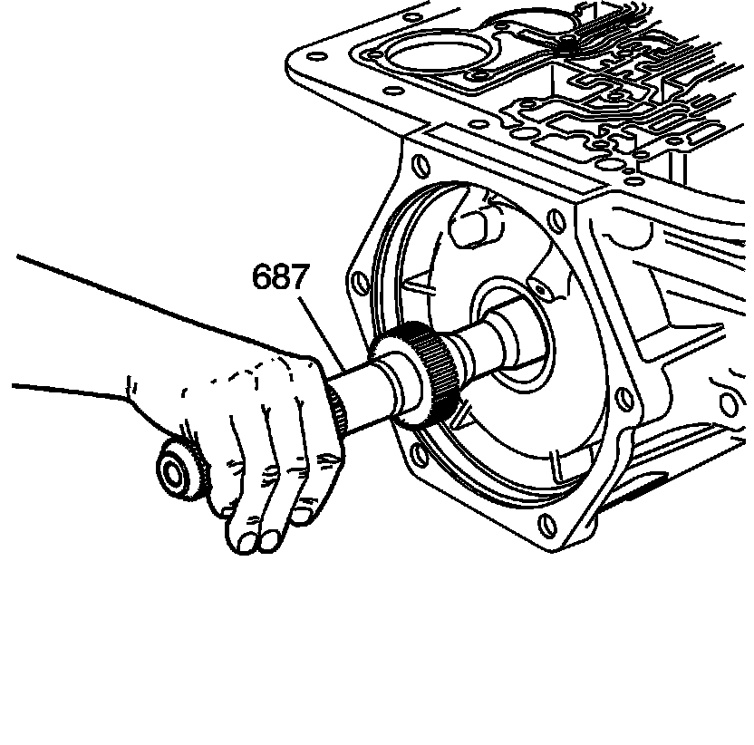
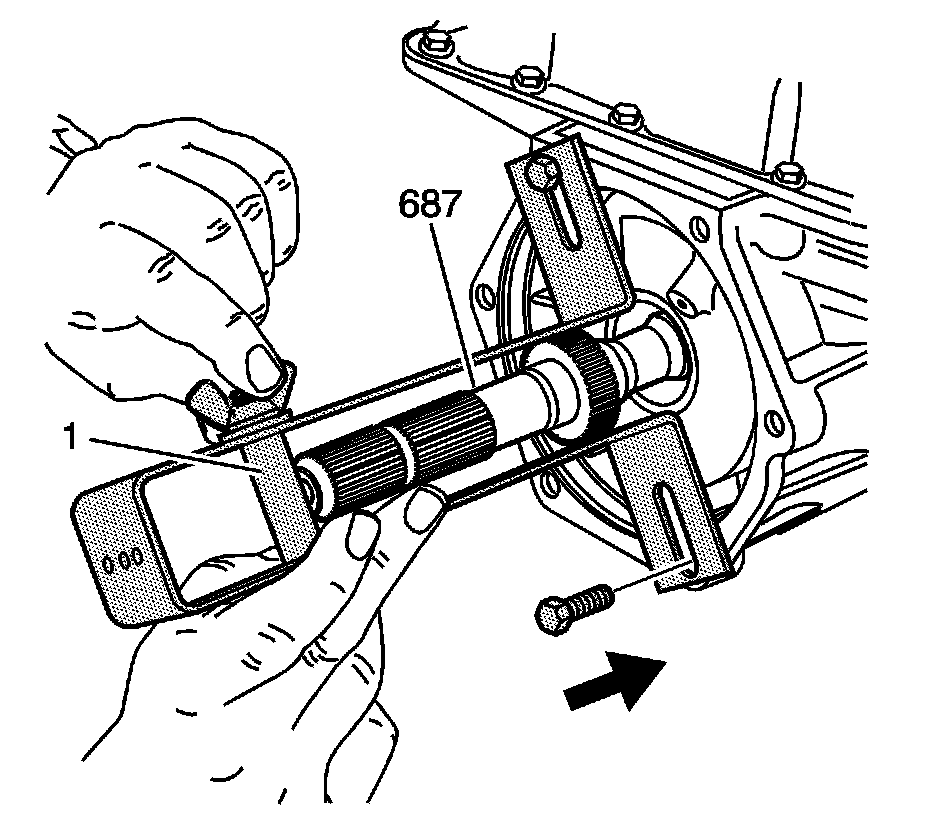

Output Shaft Installation
Output Shaft Installation
Tools Required
J 29837-A Output Shaft Support Fixture

Important: It is important to note that the input shaft may need a light tap to fully seat into position. If the input shaft is not completely engaged, the output shaft to input carrier retainer (661) will not seat.
1. Install the output shaft (687).

2. Install the J 29837-A as shown. Support the output shaft (687) with adjustable stop (1).